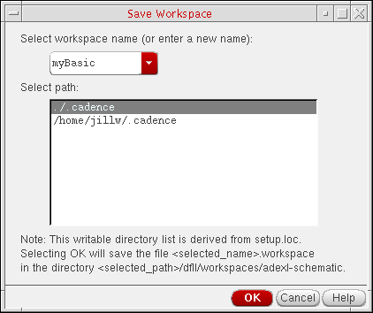
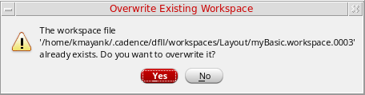

Saving a Workspace
You can save a custom workspace that is based on an existing, default workspace or a new version of a default workspace. For example, you could create a Constraints_Schematics workspace to complement the existing Constraints workspace or you could save a new version of the Constraints workspace.
If you save a new version of a default workspace, you might not be able to retrieve the original.
-
On the Workspace toolbar, click the Save Workspace icon.
The Save Workspace form appears.
 - In the Select workspace name drop-down combo box, either select a workspace name or type a new name.
-
Select the Overwrite existing workspace check box if you want to overwrite the existing workspace.
If the check box is not selected and the name of the workspace is same as that of an existing workspace, the following message is displayed.
Click Yes to continue.
You can overwrite the existing workspace only if you have the required permissions. In case you do not have the required permissions, an error message is displayed. - In the Select path list area, select a location.
-
Click OK.
A message appears in the output area of your Command Interpreter Window indicating the name and location where the program saved your workspace. For example:Saved Workspace "myBasic" to "./.cadence/dfII/workspaces/adexl-schematic/myBasic.workspace"
Saved Workspace "myBasic" to "/home/user/.cadence/dfII/workspaces/adexl-schematic/myBasic.workspace
Related Topics
Loading and Deleting a Custom Workspace
Return to top